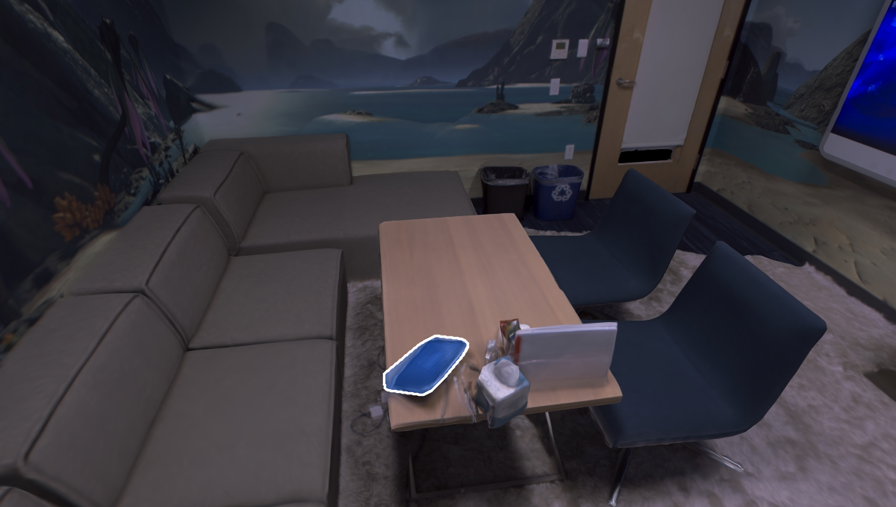
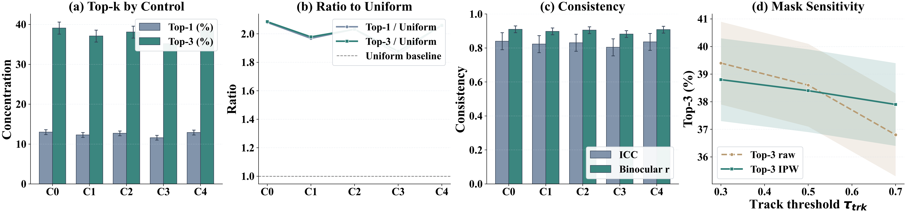
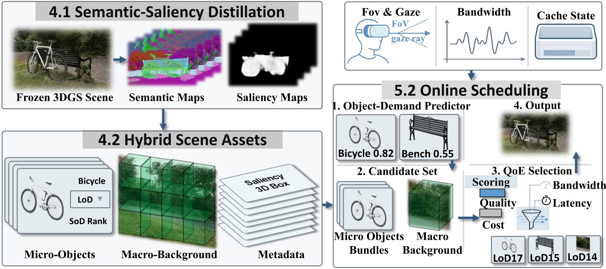
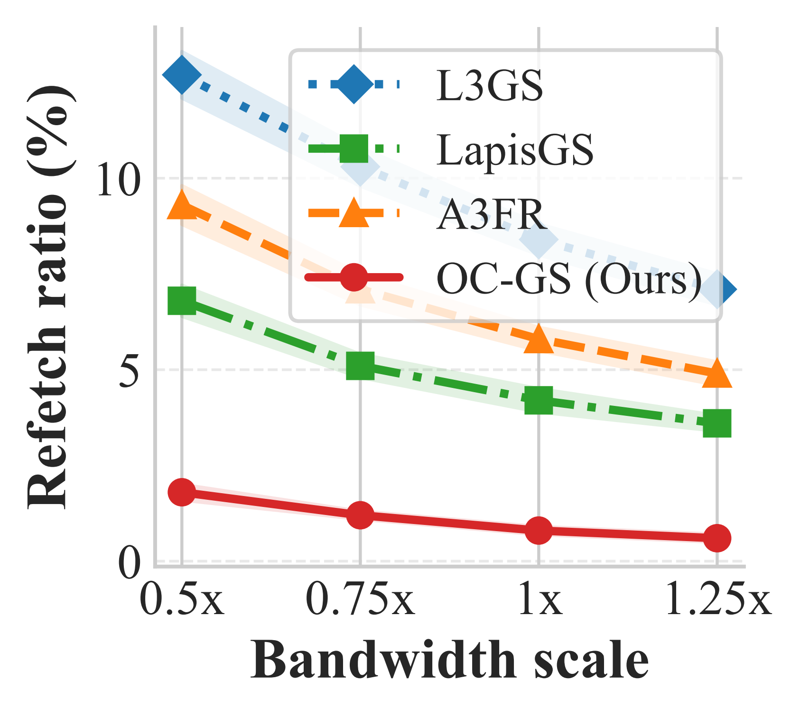
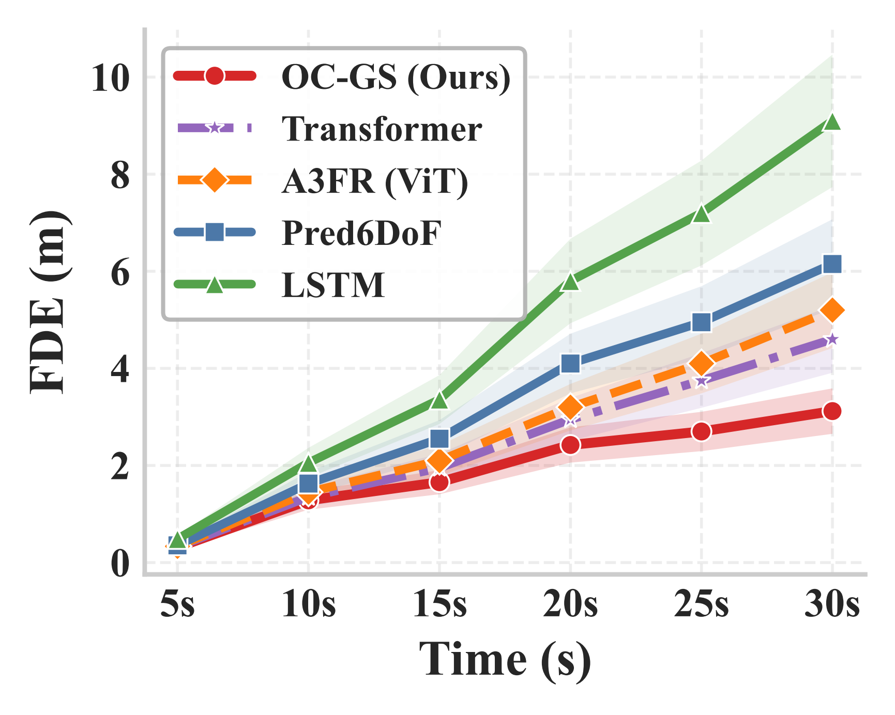
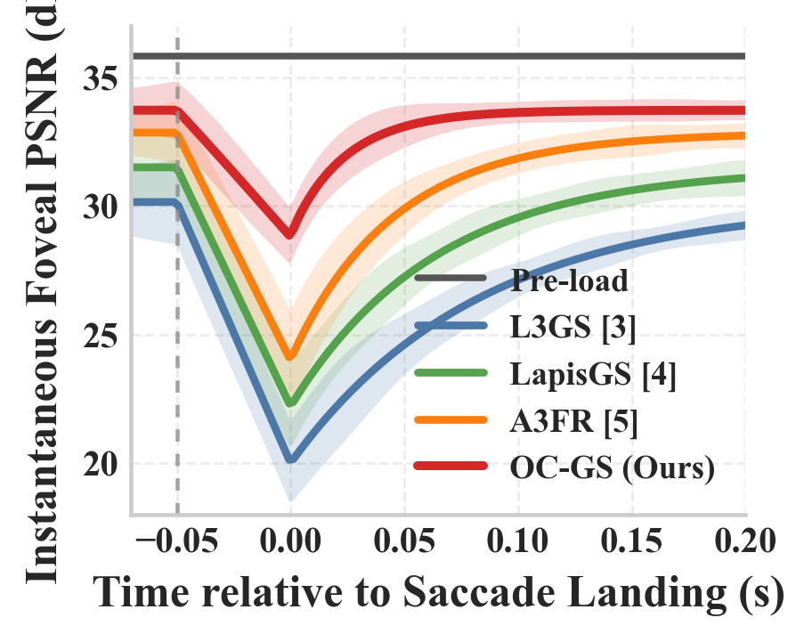
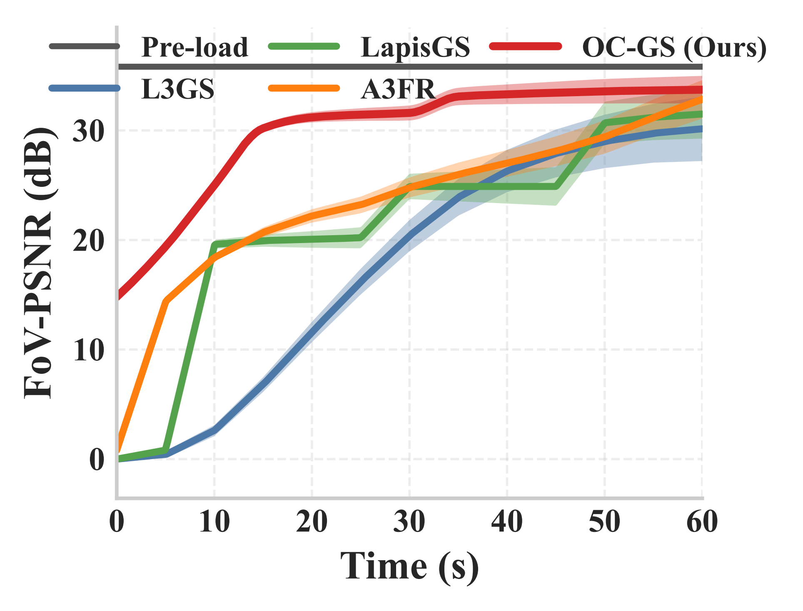
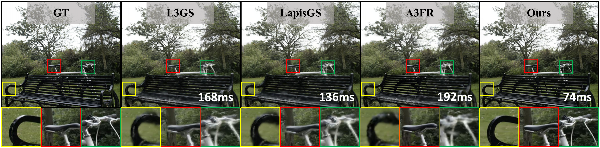

Recovery latency
72-78 ms
versus 139-192 ms for the strongest baseline
Anonymous ACM Multimedia 2026 Submission
OC-GS treats immersive streaming as a representation-demand alignment problem. Instead of transmitting spatially coupled chunks, it exposes semantic objects as executable units and couples prediction with Lyapunov-governed control to recover attended regions faster and with far less redundant transfer.
Motivation
The core mismatch in immersive streaming is structural: users attend to semantic objects, while traditional systems transmit spatially coupled regions. OC-GS starts by fixing that mismatch at the request-unit level.

Phone Notebook Tissue boxThe homepage view mirrors the paper's argument: gaze concentrates on a few objects, so object-addressable transport matches actual demand far better than uniform or purely spatial slicing.

Four diagnostic views support the same claim: concentration over top objects is consistently above uniform, the effect is binocularly stable, and the conclusion is robust to mask-threshold changes.
Two-Stage System
OC-GS is a coordinated stack rather than a single predictor. The offline stage turns frozen 3DGS scenes into object-addressable assets, and the online stage consumes exactly that interface to make legal, low-churn scheduling decisions.
Attach object-assignable semantics and utility to frozen 3DGS without touching geometry or appearance.
Fuse geometry, intent, and runtime state into object demand, then convert demand into feasible low-churn actions.

Benchmark Results
The strongest evidence for OC-GS is not one number. It is the consistency of the gain across Mip-NeRF360, ScanNet++, and Replica: when demand is represented in object space, the system spends less bandwidth on collateral bytes and stabilizes better over time.
OC-GS halves the wall-clock recovery time relative to A3FR while improving Fov-PSNR.
Object-level request units eliminate much of the revisit churn that spatial units keep paying for.
OC-GS remains ahead on attended Fov-PSNR while also reducing redundant transfer and recovery delay.
| Method | Mip-NeRF360 | ScanNet++ | Replica | |||||||||
|---|---|---|---|---|---|---|---|---|---|---|---|---|
| Fov-PSNR ↑ | SSIM ↑ | Recovery ↓ | Refetch ↓ | Fov-PSNR ↑ | SSIM ↑ | Recovery ↓ | Refetch ↓ | Fov-PSNR ↑ | SSIM ↑ | Recovery ↓ | Refetch ↓ | |
| Original 3DGS | 35.82 | 0.982 | N/A | N/A | 38.44 | 0.986 | N/A | N/A | 37.18 | 0.984 | N/A | N/A |
| L3GS | 30.15 | 0.895 | 168 | 8.4% | 32.68 | 0.921 | 161 | 12.7% | 31.27 | 0.907 | 171 | 13.5% |
| LapisGS | 31.50 | 0.910 | 136 | 4.2% | 34.23 | 0.961 | 138 | 7.3% | 32.91 | 0.937 | 147 | 7.9% |
| A3FR | 32.85 | 0.925 | 192 | 5.4% | 35.68 | 0.972 | 184 | 8.8% | 34.18 | 0.946 | 139 | 9.4% |
| OC-GS | 33.72 | 0.948 | 74 | 0.8% | 37.45 | 0.981 | 72 | 1.9% | 35.49 | 0.963 | 78 | 2.3% |

OC-GS preserves its advantage across bandwidth regimes instead of collapsing once the budget tightens.

The predictor estimates demand in object space, which improves where the system spends the next transmission step.

Event-aligned recovery curves show that OC-GS reaches usable attended quality much earlier after a gaze shift.

Lyapunov-governed scheduling reduces long-session churn rather than merely winning isolated recovery events.
Qualitative Evidence
The main qualitative view fixes the same event, the same budget, and the same 50 ms snapshot after a gaze or saccade shift. That alignment makes the visual comparison about early recovery quality rather than eventual convergence.

Main-paper qualitative snapshot: the same event, the same budget, and the same fixed 50 ms view after gaze or saccade shift.

Expanded qualitative comparison under the same early-recovery setting, adding more scenes and method pairs without changing the event-aligned protocol.
Ablation Ladder
The ablation is a systems necessity ladder, not a cosmetic drop-one study. It shows that better prediction alone is insufficient: stable long-horizon behavior appears only once object units, legality, and Lyapunov-style control all operate in the same loop.
| Method | Fov-PSNR ↑ | Temp. Instab. ↓ | Recovery ↓ | Refetch ↓ |
|---|---|---|---|---|
| (a) Spatial | 30.45 | 1.84 | 320 | 6.2% |
| (b) Obj-gran | 32.10 | 1.36 | 285 | 4.8% |
| (c) Geom-anchor | 32.74 | 1.18 | 162 | 4.4% |
| (d) Full-pred | 33.50 | 0.96 | 34.2 | 5.1% |
| (e) Seg-Prio | 32.62 | 1.14 | 128 | 3.3% |
| (f) OL+DepChk | 32.79 | 1.06 | 112 | 2.6% |
| (g) OC-GS | 33.72 | 0.51 | 74 | 0.8% |
Switching from spatial fragments to object packages already improves quality and reduces delay, because the request unit finally matches semantic demand.
Full-pred reaches the best event-wise recovery time, but still suffers 5.1% refetch and nearly double the instability of OC-GS.
Only the combination of object-addressable actions, dependency legality, and Lyapunov control converts prediction into sustainable long-session behavior.
Deployment and Cost
OC-GS pays a one-time offline objectization cost, then keeps the online loop lightweight. The homepage reports the same deployment numbers as the paper so the engineering trade-off stays explicit.
offline_distillation_per_scene = ~3 hours # RTX 3090 online_predictor_latency = < 10 ms scheduler_period = 100 ms semantic_side_payload = 6.2 MB + 64 KB dense_semantic_equivalent = ~244 MB cold_start_added@100Mbps = 0.6 s cold_start_added@20Mbps = 2.7 s
OC-GS first compresses semantics into a sparse representation, then applies a conventional streaming-style packing step to halve the transmitted side channel again before deployment.
Objectization is paid once per scene, then reused across participants and sessions.
The predictor stays below 10 ms, leaving headroom inside the 100 ms scheduling epoch.
L3GS and LapisGS keep their own hierarchy and controller logic; A3FR receives only a thin transport adapter.